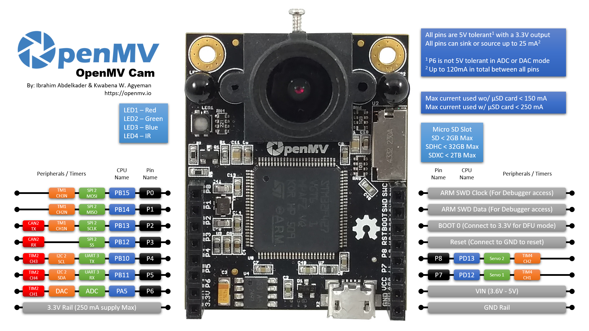

OpenMV Cam M4¶
OpenMV Cam M4 הוא לוח ראייה ממוחשבת קומפקטי מבוסס Cortex‑M4, הבנוי סביב STM32F427 של STMicroelectronics בתדר 180 MHz עם 256 KB של SRAM פנימי ו‑1 MB של זיכרון פלאש (flash) פנימי. החיישן OV7725 המצורף לוכד פריימים בגווני אפור או RGB565 ברזולוציה של 320×240, וכותרת המשתמש בעלת 9 הפינים חושפת את ההתקנים ההיקפיים UART, I²C, SPI, CAN, ADC/DAC ו‑PWM.
הערה
ה‑OV7725 היה החיישן הסטנדרטי בלוחות M4 בייצור. גרסאות מוקדמות מאוד של ה‑M4 סופקו עם OmniVision OV2640 במקום זאת — אותו צינור תצוגה מקדימה של QVGA, אך ה‑OV2640 יכול גם ללכוד פריימים בפורמט JPEG עד UXGA (1600×1200). שני החיישנים מונעים דרך אותו ממשק API של csi — חיישני מצלמה.

לעיון בגיליון נתונים מלא, תמונות ומידות ראו את עמוד המוצר של OpenMV Cam M4.
עיקרי הדברים¶
STMicroelectronics STM32F427 Cortex‑M4 בתדר 180 MHz.
256 KB של SRAM פנימי — ללא SDRAM חיצוני.
1 MB של זיכרון פלאש (flash) פנימי (ללא זיכרון פלאש QSPI חיצוני).
חיישן OV7725 (או OV2640 בגרסאות מוקדמות מאוד של ה‑M4) — 320×240 בגווני אפור 8 סיביות או RGB565; ה‑OV2640 יכול בנוסף ללכוד JPEG עד UXGA (1600×1200).
USB במהירות מלאה (12 Mb/s) — מופיע כ‑VCP + אחסון בנפח גדול ב‑USB מול המארח.
שקע microSD — SD עד 2 GB, SDHC עד 32 GB, SDXC עד 2 TB.
9 פיני קלט/פלט, סובלניים ל‑5 V עם פלט 3.3 V, 25 mA לכל פין (120 mA בסך הכול לאורך הכותרת), בעלי יכולת פסיקה. P6 אינו סובלני ל‑5 V כאשר משתמשים בו במצב ADC או DAC.
נורית RGB LED למשתמש ושתי נוריות IR LED עתירות עוצמה בתדר 850 nm לתאורה אקטיבית בראייה בתאורה חלשה.
הערה
ל‑M4 אין שבב ניהול הספק על הלוח: אין מחבר סוללה, אין מטען סוללה, אין ADC למתח סוללה, אין נוריות מצב טעינה / הספק, ואין לחצן הפעלה חומרתי. הזינו את הלוח מ‑USB או מ‑VIN.
מפת פינים¶
{kind=link}

מדריך פינים¶
שם הפין |
פונקציה |
|---|---|
P0 |
SPI2 MOSI |
P1 |
SPI2 MISO |
P2 |
SPI2 SCK / CAN2 TX |
P3 |
SPI2 NSS (CS) / CAN2 RX |
P4 |
I2C2 SCL / UART3 TX / TIM2 CH3 |
P5 |
I2C2 SDA / UART3 RX / TIM2 CH4 |
P6 |
ADC / DAC / TIM2 CH1 |
P7 |
TIM4 CH1 |
P8 |
TIM4 CH2 |
RESET |
משכו ל‑GND כדי לאפס את הלוח |
BOOT0 |
משכו ל‑3.3 V בעת ההפעלה עבור DFU / מאתחל ROM |
SWCLK |
שעון ARM SWD (גישת מנפה שגיאות) |
SWDIO |
נתוני ARM SWD (גישת מנפה שגיאות) |
LED_RED |
ערוץ אדום של נורית RGB LED (פעיל בנמוך) |
LED_GREEN |
ערוץ ירוק של נורית RGB LED (פעיל בנמוך) |
LED_BLUE |
ערוץ כחול של נורית RGB LED (פעיל בנמוך) |
LED_IR |
נוריות IR LED עתירות עוצמה (שני הערוצים מונעים יחד) |
פיני הספק¶
3.3V — מסילת 3.3 V מיוצבת. עד 250 mA זמינים עבור מגנים (פחות אם כרטיס ה‑microSD בשימוש). בשונה מהמצלמות החדשות יותר, פין זה דו‑כיווני — ראו את האזהרה למטה.
VIN — קלט של 3.6 – 5 V. מזין את הלוח דרך המייצב שעל הלוח.
GND — הארקה משותפת.
הערה
כאשר גם USB וגם VIN נוכחים, זה בעל המתח הגבוה יותר מזין את הלוח — הדיודות שעל הלוח פשוט בוחרות במסילה החזקה יותר.
אזהרה
מותר לכם להזין את ה‑M4 על ידי הזרמת 3.3 V ישירות לפין 3.3V אם אינכם רוצים לעבור דרך המייצב שעל הלוח. במקרה כזה, אל תפעילו גם VIN או הספק USB בו זמנית — הזנה הפוכה לתוך המייצב בזמן שמקור אספקה אחר פעיל עלולה לפגוע באופן קבוע ולהרוס את המצלמה.
טיפ
השתמשו במעריך אורך חיי הסוללה כדי לדמות לכמה זמן ה‑M4 יפעל על סוללה עבור מחזור עבודה נתון של פעילות / שינה עמוקה.
פיני שחזור וניפוי שגיאות¶
RESET — משכו ל‑GND כדי לאפס את הלוח. שחרורו מאפשר ל‑MCU להתחיל לפעול כרגיל.
BOOT0 — משכו ל‑3.3 V בזמן הזנת הלוח כדי להיכנס למאתחל ה‑ROM של STM32 (מצב DFU). OpenMV IDE משתמש במצב זה כדי לצרוב מחדש את המאתחל שעל הלוח.
SWCLK ו‑SWDIO מחווטים כפיני כותרת רגילים (לא מחבר SWD ייעודי). חברו את RESET, SWCLK, SWDIO, GND ו‑3.3 V למתאם ST‑LINK או SEGGER J‑Link כדי לנפות שגיאות בלוח.
התקנים היקפיים על הלוח¶
נוריות LED¶
ל‑M4 יש נורית RGB LED יחידה למשתמש בתוספת זוג נוריות IR LED עתירות עוצמה בתדר 850 nm:
נורית RGB LED למשתמש — ניתנת לשליטה תוכנתית, נחשפת כ‑
LED_RED,LED_GREENו‑LED_BLUEfrom machine import LED LED("LED_RED").on() LED("LED_GREEN").on() LED("LED_BLUE").on()
נוריות IR LED — שתי הנוריות מונעות יחד דרך הפין
LED_IR. LED_IRמחווט פעיל בגבוה בחומרה בעוד שהקושחה מתייחסת לכל נורית LED אחרת על הלוח כפעילה בנמוך, לכן השתמשו בlow()/high()במקום בon()/off()(אשר היו הופכים את ההיגיון):from machine import LED ir = LED("LED_IR") ir.low() # turn IR illumination ON ir.high() # turn IR illumination OFF
חיישן המצלמה¶
החיישן המצורף (OV7725 בלוחות סטנדרטיים, OV2640 בגרסאות מוקדמות מאוד) מונע דרך מודול הcsi — חיישני מצלמה
import csi
cam = csi.CSI()
cam.reset()
cam.pixformat(csi.RGB565)
cam.framesize(csi.QVGA)
cam.snapshot(time=2000) # let auto‑exposure settle
while True:
img = cam.snapshot()
החיישן מולחם ללוח ב‑M4 — הוא אינו על מודול ניתן להחלפה.
הערה
בלוחות OV7725 הפין FSIN (סנכרון פריימים) של החיישן מחווט ל‑MCU אך תמיכת קושחה עבורו לא נוספה.
בלוחות OV2640 הפינים STROBE, FREX (חשיפת פריים) ו‑EXPST (איפוס חשיפה) של החיישן מחווטים ל‑MCU אך תמיכת קושחה עבורם לא נוספה.
כותרות סרוו¶
בצד האחורי של הלוח ישנם שני רפידות הלחמה למחבר סרוו החושפות את כותרת הסרוו הסטנדרטית בעלת 3 הפינים (אות / VIN / GND) עבור P7 ו‑P8. פיני האות ממופים ישירות לערוצים 1 ו‑2 של TIM4 (אותם הערוצים שבשימוש pyb.Servo), והפין V+ בכל כותרת מחווט ישירות ל‑VIN, כך שהסרוו צורכים את הזרם שלהם ממסילת הקלט ולא מהמייצב של 3.3 V.
הלחימו זוג כותרות בעלות 3 פינים בזווית ישרה לתוך הרפידות וחברו שני סרוו תחביב כדי להניע מתקן הטיה וסיבוב (pan‑and‑tilt):
from pyb import Servo
pan = Servo(1) # P7 — TIM4 CH1
tilt = Servo(2) # P8 — TIM4 CH2
pan.angle(0)
tilt.angle(0)
כרטיס microSD¶
כאשר מוכנס כרטיס הוא מותקן אוטומטית בנתיב /sdcard וניתן לשימוש דרך מערכת הקבצים הרגילה:
import os
for entry in os.listdir("/sdcard"):
print(entry)
מדריך אפיקים¶
GPIO¶
השתמשו בmachine.Pin כדי לקרוא או להניע כל אחד מהפינים המסומנים. הפלטים הם 3.3 V CMOS, סובלניים ל‑5 V בצד הקלט, ויכולים לשקוע/לספק עד 25 mA לכל פין (120 mA בסך הכול לאורך הכותרת כולה).
from machine import Pin
out = Pin("P0", Pin.OUT)
out.on()
out.off()
out.value(1)
inp = Pin("P1", Pin.IN, Pin.PULL_UP)
print(inp.value())
כל פין קלט יכול גם להפעיל פסיקה במעברי קצה:
def handler(pin):
print("triggered:", pin)
Pin("P1", Pin.IN, Pin.PULL_UP).irq(
handler, Pin.IRQ_FALLING | Pin.IRQ_RISING,
)
UART¶
אפיק |
TX |
RX |
|---|---|---|
UART3 |
P4 |
P5 |
from machine import UART
uart = UART(3, baudrate=115200)
uart.write("hello")
uart.read(5)
I²C¶
אפיק |
SCL |
SDA |
|---|---|---|
I2C2 |
P4 |
P5 |
from machine import I2C
i2c = I2C(2, freq=400_000)
i2c.scan()
i2c.writeto(0x76, b"hi")
ניתן להשתמש באותה חומרה גם במצב יעד (slave) דרך machine.I2CTarget כדי לחשוף אזור זיכרון לבקר I²C אחר:
from machine import I2CTarget
buf = bytearray(32)
target = I2CTarget(2, addr=0x42, mem=buf)
SPI¶
אפיק |
MOSI |
MISO |
SCK |
CS |
|---|---|---|---|---|
SPI2 |
P0 |
P1 |
P2 |
P3 |
from machine import SPI
from machine import Pin
spi = SPI(2, baudrate=10_000_000)
cs = Pin("P3", Pin.OUT, value=1) # CS is not driven by the SPI peripheral
cs.value(0)
spi.write(b"hello")
cs.value(1)
CAN¶
אפיק |
TX |
RX |
|---|---|---|
CAN2 |
P2 |
P3 |
from machine import CAN
can = CAN(2, 500_000)
can.set_filters(None)
can.send(0x123, b"\xDE\xAD\xBE\xEF")
print(can.recv())
ADC ו‑DAC¶
P6 הוא הפין האנלוגי היחיד למשתמש. ניתן להשתמש בו כקלט ADC של 12 סיביות או כפלט DAC.
ADC — סקאלה מלאה ב‑3.3 V בפין:
from machine import ADC import time adc = ADC("P6") while True: voltage = adc.read_u16() * 3.3 / 65535 print(voltage) time.sleep_ms(100)
DAC — דרך
pyb.DAC. הערך של 8 סיביות מכסה 0–3.3 V:from pyb import DAC dac = DAC("P6") voltage = 1.65 dac.write(int(voltage / 3.3 * 255))
במצב ADC או DAC הפין P6 הוא סובלני ל‑3.3 V בלבד — אל תזינו לו 5 V.
PWM¶
פין |
טיימר / ערוץ |
|---|---|
P4 |
TIM2 CH3 |
P5 |
TIM2 CH4 |
P6 |
TIM2 CH1 |
P7 |
TIM4 CH1 |
P8 |
TIM4 CH2 |
הערה
TIM1 שמור על ידי הקושחה ליצירת שעון הפיקסלים של חיישן המצלמה, לכן ערוצי TIM1 הנמצאים פיזית על P0/P1/P2 אינם ניתנים לשימוש עבור PWM של משתמש מבלי לשבש את המצלמה.
TIM4 משותף עם pyb.Servo — יצירת מופע של סרוו מגדירה מחדש את כל הטיימר לפעולה ב‑50 Hz, לכן אל תערבבו machine.PWM על P7/P8 עם pyb.Servo באותו הסקריפט.
הניעו כל אחד מהם דרך machine.PWM
from machine import Pin, PWM
pwm = PWM(Pin("P7"), freq=1_000, duty_u16=32768)
אפיקים תוכנתיים בשיטת bit‑bang¶
machine.SoftI2C ו‑machine.SoftSPI עובדים על כל GPIO אם אתם זקוקים לאפיק נוסף.
חיישן תרמי (חיצוני ללוח)¶
הקושחה כוללת את מנהל ההתקן fir — מנהל התקן לחיישן תרמי (fir == far infrared) עבור מדמי תרמי מחווטים חיצונית:
MLX90621 — מערך IR בגודל 16 × 4
MLX90640 — מערך IR בגודל 32 × 24
MLX90641 — מערך IR בגודל 16 × 12
AMG8833 — מערך IR בגודל 8 × 8
חווטו את המודול לאפיק ה‑I²C של הלוח וקראו פריימים באמצעות fir.init() + fir.snapshot()
import time
import image
import fir
fir.init() # auto‑detects the sensor
clock = time.clock()
while True:
clock.tick()
try:
img = fir.snapshot(x_scale=5, y_scale=5,
color_palette=image.PALETTE_IRONBOW,
hint=image.BICUBIC,
copy_to_fb=True)
except OSError:
continue
print(clock.fps())
מנהל ההתקן fir מתקשר עם החיישן רק דרך I²C 2 — חווטו את המודול ל‑P4 (SCL) ול‑P5 (SDA).
תזמון¶
time¶
המודול time מכסה השהיות חוסמות, טיקים מונוטוניים ומדידת זמן שחלף:
import time
time.sleep(1) # seconds
time.sleep_ms(500)
time.sleep_us(10)
start = time.ticks_ms()
# ...do work...
elapsed = time.ticks_diff(time.ticks_ms(), start)
טיימרים וירטואליים¶
machine.Timer מתזמן פונקציות callback מחזוריות או חד‑פעמיות מבלי לצרוך משבצת טיימר חומרתי. העבירו -1 כמזהה כדי להשתמש בטיימר וירטואלי (תוכנתי):
from machine import Timer
one_shot = Timer(-1)
one_shot.init(period=5_000, mode=Timer.ONE_SHOT,
callback=lambda t: print("once"))
periodic = Timer(-1)
periodic.init(period=2_000, mode=Timer.PERIODIC,
callback=lambda t: print("tick"))
ערכי המחזור הם במילישניות. קראו לdeinit() כדי לעצור ולשחרר את המשבצת.
שעון זמן אמת¶
machine.RTC שומר על זמן שעון קיר לאורך איפוסים:
from machine import RTC
rtc = RTC()
rtc.datetime((2026, 4, 30, 4, 12, 0, 0, 0)) # Y, M, D, weekday, h, m, s, subsec
print(rtc.datetime())
כלב שמירה (Watchdog)¶
machine.WDT מאפס את הלוח אם היישום נתקע. לאחר שהופעל לא ניתן לעצור אותו או להגדירו מחדש — האכילו אותו מעת לעת בתוך הלולאה הראשית שלכם:
from machine import WDT
wdt = WDT(timeout=5_000) # 5 second window
while True:
# ...do work...
wdt.feed()
מידע על אתחול וזמן ריצה¶
חלון מאתחל USB¶
בכל הפעלה המצלמה מריצה מאתחל קצר (מספר שניות) המאפשר ל‑OpenMV IDE לעדכן את הקושחה מבלי שהמשתמש יצטרך להיכנס למצב DFU. לאחר שחלון הזמן פג, המאתחל מעביר את השליטה ל‑boot.py ולאחר מכן ל‑main.py.
סקריפט פעיל יכול להיכנס מחדש למאתחל לפי דרישה על ידי קריאה לmachine.bootloader()
import machine
machine.bootloader()
מערכת הקבצים וסדר האתחול¶
קושחת ה‑M4 מתקינה עד שלוש מערכות קבצים בעת האתחול:
זיכרון פלאש (flash) פנימי — מותקן תמיד בנתיב
/flash. מכיל אתmain.pyו‑README.txtכברירת מחדל; נוצר באתחול הראשון ממש.כרטיס microSD — אם מוכנס כרטיס הוא מותקן בנתיב
/sdcard.ROMFS — מערכת קבצים לקריאה בלבד, ממופה לזיכרון, בנתיב
/rom, המשמשת לאספקת נכסי נתונים גדולים (למשל מודלי AI) הנהנים מגישה ללא העתקה. מותקנת אוטומטית על ידי MicroPython בעת ההפעלה, לפני שמורץ קוד Python כלשהו של המשתמש.
לאחר ההתקנה, ספריית העבודה מוגדרת ל‑/sdcard כאשר הכרטיס נוכח, אחרת ל‑/flash. המפרש מריץ אז סקריפטים מספרייה זו:
boot.pyמורץ בכל איפוס רך (אתחול קר, Ctrl‑Dמה‑REPL, או בכל פעם שהסקריפט הפעיל מסתיים).main.pyמורץ רק באתחול קר, מיד לאחרboot.py. איפוסים רכים עוקבים מריצים מחדש אתboot.pyאך עוברים ישירות ל‑REPL — כדי להריץ מחדש אתmain.pyעליכם לאפס את הלוח לחלוטין.
הנחת boot.py או main.py על כרטיס ה‑SD גוברת על העותק שבזיכרון הפלאש מבלי לגעת בו — שני הקבצים מחופשים בספריית האתחול (/sdcard כאשר הכרטיס מותקן, אחרת /flash).
ה‑main.py המוגדר כברירת מחדל המסופק על לוח שזה עתה נצרב פשוט מהבהב את הערוץ הכחול של נורית RGB LED למשתמש כפעימת לב (שני הבזקים קצרים, מרווח קצר), כך שתוכלו לדעת שהקושחה אותחלה בהצלחה ללא כל מארח מחובר.
sys.path מורחב כך שיכלול את כל שלוש מערכות הקבצים ואת תת‑הספריות lib/ שלהן, כך שמודולים הניתנים לייבוא יכולים להתגורר ב‑/flash/lib, /sdcard/lib או /rom/lib.
כדי לכפות על המערכת להתעלם מכרטיס SD מוכנס (לדוגמה כדי להריץ את main.py שבזיכרון הפלאש גם כאשר כרטיס נוכח), צרו קובץ ריק בשם SKIPSD בשורש של /flash.
כאשר מחובר דרך USB, מערכת קבצי האתחול (/sdcard אם נוכח כרטיס, אחרת /flash) גם מונה ככונן אחסון בנפח גדול ב‑USB במארח, ומאפשרת לכם לערוך את boot.py, main.py וכל קובץ אחר ישירות. הוציאו את הכונן לפני איפוס המצלמה כך שהמארח יסנכרן את הכתיבות שבמטמון שלו.
הערה
מכיוון שמערכת ההפעלה מתייחסת לכונן כהתקן בלוקים פסיבי, קבצים שנוצרו או שונו על ידי קוד הרץ על ה‑OpenMV Cam לא יופיעו עד שהמארח יתקין מחדש את הכונן. אם גם מערכת ההפעלה וגם ה‑OpenMV Cam כותבים לאותה מערכת קבצים בו זמנית, מערכת ההפעלה תנצח ותדרוס שינויים שביצעה המצלמה. השתמשו בכרטיס ה‑SD עבור כל נתון שהסקריפט כותב חזרה, והתקינו מחדש לפני קריאת קבצים אלה מהמארח.
הערה
הערוץ האדום של נורית RGB LED למשתמש עשוי להידלק לרגע בזמן שהמארח קורא מכונן האחסון בנפח גדול ב‑USB או כותב אליו — זהו מחוון פעילות מונע קושחה, לא תקלה.
גדלי אחסון¶
ה‑M4 מסופק עם:
/flash— מערכת קבצים FAT בגודל 32 KB, לקריאה/כתיבה./rom— ROMFS ממופה לזיכרון לקריאה בלבד בגודל 128 KB./sdcard— הגודל המלא של כל כרטיס microSD שמוכנס (כאשר נוכח), לקריאה/כתיבה.
מחוון תקלה קשה (hard‑fault)¶
אם נורית RGB LED למשתמש מחליפה במהירות בין כל הצבעים — מהר מספיק כך שהיא נוטה להיראות כנורית LED לבנה מנצנצת במקום גוונים נפרדים — הקושחה נתקלה בתקלה קשה בלתי ניתנת לשחזור. צרבו מחדש את הקושחה כדי לשחזר; אם צריבה מחדש אינה עוזרת, ייתכן שהלוח פגום פיזית.
ספריות תוכנה¶
ראו את אינדקס הספרייה לרשימה המלאה של המודולים — כולל אלה הייחודיים לבניית ה‑M4.